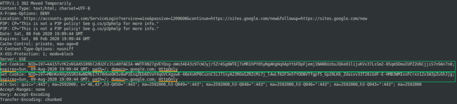

Cookies (Set-Cookie & Cookie headers)
HTTP is a stateless protocol →
This means that a
website can't keep the state of a visit
through different HTTP requests without a mechanism such cookies and sessions variables
How are shared
cookies → cookies are shared between the client's browser and the server using the
HTTP Headercookie jar → the storage space where a
web browser stores the cookies
A web server can set a cookie with the header field
Set-Cookie and send it to the client that has made the request.
The
Set-Cookie
field has the following attribute:
•
ID key→ value of the actual cookie content(e.g.: a=556;
username="Daniele")
•
Expires → Expiration date GMT of the cookie; if there is not a
Expires attribute, the cookie will be deleted at the end of the http session
•
Path → the
browser when will make future requests will send the cookies only at the domain with the this directory(path) and
its subfolder
•
Domain → the browser when will make future requests will send the cookies only
for the Domain set and its subdomain(e.g: example.com,
.example.com).
If the server does not
specify the domain attribute, the browser will automatically set the domain attribute as
host-only, this means that the cookie will be sent only to
the
precise hostname(no at the subdomains) of the server#FF0000 that has sent
the http response to the client.
• Optional flags(important for security purpose):
◇
HttpOnly flag →tell the browser expose the cookie only through HTTP (and HTTPS) requests (no
JavaScript, Flash, Java)
◇
Secure flag → tell the browser send the cookie only via
secure/encrypted connections(like HTTPS)
For every subsequent
request, the browser will considers: Domain, Path, Expiration, Flags
If all of them match, then the
browser in the header of the request will insert the value of the
ID
key If the Domain vaule in the Set-Cookie is not specified, the Id key will be accepted
only by the domain that have set the cookie not its subdomains
For more see:
https://tools.ietf.org/html/rfc6265Bibliography:•
https://www.sans.org/blog/security-impact-of-http-caching-headers/